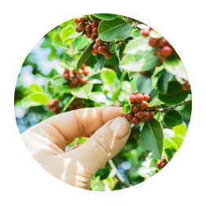
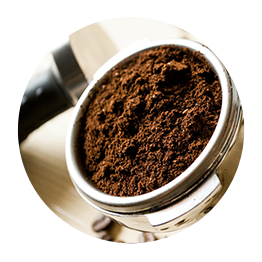

커피 소개
커 피 를 소 개 합 니 다
COFFEESO
이미지 패널 영역


커피 소개 영역
-
커피의 역사
동아프리카로서부터 시작해
중동, 유럽, 인도 등으로 퍼지면서 오늘날
전세계적으로 커피를 즐기게 되었습니다. -
커피의 어원
“커피”라는 단어는 커피의 원산지인
에티오피아의 남서부 “카파”에서
유래되었다는 설이 존재합니다. -
커피의 재배
커피 재배가 가능한 곳은 열대성 기후로
강우량이 많은 따뜻하고 습한 아시아, 아프리카,
중남미 지역에서 잘 자랍니다. -
커피의 추출과 분류
커피는 추출 방식에 따라 거름 장치를 거쳐
내린 드립커피, 찬 물로 긴 시간에 걸쳐 내리는
콜드 브루 등으로 나뉘어집니다. -
커피의 효능
한 잔의 커피에는 노화예방에 좋은
항산화 성분이 가득하며, 장 건강에 유익한
유산균을 활성화시킵니다.